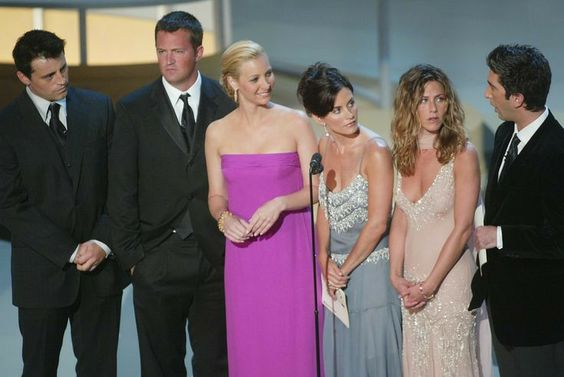

Awards for Friends
Friends received significant acclaim throughout its original run from 1994 to 2004. Over the years, the sitcom won six Primetime Emmy Awards out of a whopping 62 nominations.
Michael Lembeck won in 1996 for Outstanding Directing For A Comedy Series. Lisa Kudrow and Jennifer Aniston won Outstanding Supporting Actress in 1998 and Outstanding Lead Actress in 2002, respectively. For most of the show's run, the cast submitted themselves all as supporting actors with no leads to honor their shared role as a true ensemble.
Other Awards
Beyond the Emmy Awards, Friends received accolades from various guilds and organizations. Aniston won a Golden Globe award in 2003 for Best Actress in a Musical or Comedy. The show won six People's Choice Awards, with Aniston winning five of her own Favorite Female TV Performer awards for her role as Rachel. Friends also won plenty of Screen Actors Guild Awards and Teen Choice Awards -- it even won Choice Throwback TV Show back-to-back years in 2018 and 2019, showing the impact the show has had over a decade after the last episode aired on network television.